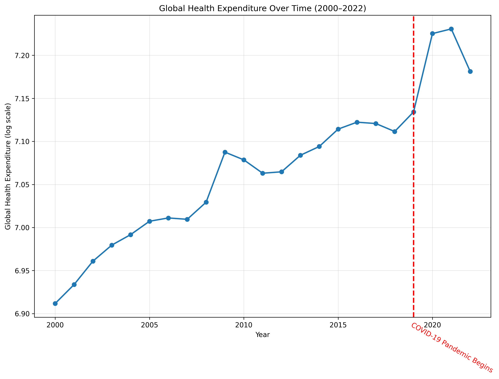

An Analysis of Global Mortality Rates and Healthcare Performance
Introduction
The topic that is being focused on pertains to how potential healthcare gaps,
in different countries, can be addressed. The analysis of mortality rates across
different countries can allow for comparison on healthcare and cause of death,
which informs public health planning, healthcare system performance, and public policy decisions.
This is important as the analysis can assist in revealing interconnected factors related
to healthcare, such as how structural issues, economy, and sustainability affect
mortality rates. With this information, recommendations can be made to determine how
global healthcare can be improved.
For information that discusses cross-country mortality patterns due to age, sex, and geographic location click
the first link. This information is discussed over 31 years to gain perspective on how time affects global mortality rates in the
Global Burden of Disease Study 2021 or with information relating
to disease specific mortality trends across various countries. The source considers various factors such as population structures
in the country, the GDP per capita, as well as the distribution of age ranges in each country using
A Metric Bridging Population Pyramids with Global Disease Mortality.
Introduction to the data
The data that is being utilized for this project has been sourced from Kaggle and is titled
Global Health, Mortality & Disease Trends Since 2000
Compiled from the World Bank Open Data repository, this dataset provides a wide range of global,
country-level healthcare indicators from the years 2000 to 2023. Data is sourced from many avenues including household surveys
like the Demographic and Health Survey (DHS), frameworks from the World Health Organization, and population censuses. The raw
dataset contains 26 columns which describe years and 23,871 rows which describe a wide range of healthcare indicators
(immunization rates, mortality rates, life expectancy, population dynamics) each split by country.
This dataset is suitable for an analysis of global mortality rates as it not only provides direct mortality metrics, but it also
provides several other healthcare system and population dynamic statistics which may allow for deeper investigation into what
causes differences in mortality rates per country and where there may be room for improvement. Furthermore, the expansive
timeline of this dataset will allow for an understanding of long-term trends and changes that can not only reveal long-standing
healthcare characteristics per country but also demonstrate how different healthcare systems reacted to global healthcare shocks
and crises (like the COVID-19 pandemic). That said, this dataset only contains data up until the year 2023 which means more
up-to-date metrics and developments may not be accounted for in the trends found. However, the long-term trends and health
indicators that this project is centered on should remain largely useful as these are characteristics that change slowly over time.
Key Variables
Variable
Description
Country Name
The country linked to each observation in the dataset
Series Name
The health indicator being measured, such as mortality, life expectancy, or healthcare spending
Year
The year the observation was recorded, from years 2000 to 2023
Health Expenditure per Capita
The amount of money spent on healthcare per person
Life Expectancy at Birth
The average number of years a person is expected to live at birth
Mortality Indicators
Measures used to compare death related health outcomes across countries
This choropleth map introduces the global distribution of mortality-related health outcomes across countries.
By using color to represent differences between countries, the map makes regional patterns and global disparities
easier to recognize. It works as a strong starting point for the project because it gives a broad geographic view
of the data before the later visualizations go into more detailed comparisons. Overall, the map suggests that
health outcomes are not evenly distributed across the world and may be influenced by differences in healthcare access,
spending, and development.
By hovering over different countries in this map, you can see the corresponding country name and level of health expenditure. The darkness of
country also corresponds to its amount of health expenditure (more = darker, less = lighter)
Global Health Expenditure
The first visualization is a static line plot that compares the relationship between healthcare resources
and mortality rates on a global scale. The x-axis represents the year, while the y-axis represents the expenditure on healthcare per capita.
Each point on the scatter plot represents a the expenditure for the year. This visualization allows us to
understand patterns over time in the data.

This chart shows how global health expenditure changes over time. Looking at the trend as a whole, healthcare spending appears to increase across the period covered by the dataset,
which suggests that many countries have invested more in healthcare over time. This matters because long-term increases in spending can help provide context for improvements in life expectancy
and reductions in mortality seen in later visualizations.
Takeaway: Global healthcare spending generally rises over time, and that long-term growth helps explain broader improvements in health outcomes.
Specific Health Resources Vs. Mortality Comparison
The second visualization is an Altair scatter plot that compares the relationship between healthcare resources and
mortality rates across different countries. The x-axis represents the number of healthcare physicians while the y-axis represents
the mortality rate (such as infant mortality rate or overall mortality rate).
Each point on the scatter plot represents a country, and the color of the points can indicate different population growth.
This visualization allows us to see if there is a correlation between healthcare resources and mortality rates, and to identify any
outliers or trends in the data.
This scatter plot compares healthcare resources and mortality rates across different countries. In general, countries with stronger
healthcare resources tend to have lower mortality rates, although the pattern is not perfect and there are still some outliers.
This suggests that healthcare access and investment are important factors in health outcomes, but they are not the only influence.
Overall, the visualization helps show that differences in healthcare systems may play a major role in explaining differences in
mortality between countries.
Takeaway: Countries with more healthcare resources often have lower mortality rates, but the relationship is not identical.
How to interact: Hover over each point to view country level details and compare countries that fall above or below the overall trend
Health Expenditures Over Time by Country
The third visualization is a line chart that shows the trend of health expenditures over time for different countries.
The x-axis represents the years, while the y-axis represents the amount of health expenditure.
This visualization allows us to see how health expenditures have changed over time across different
countries, and to identify any patterns or trends in the data.
This line chart shows how health expenditures change over time for different countries. It makes it easier to compare
long-term spending trends and see which countries steadily increased healthcare investment versus which stayed more stable over time.
Looking at the data this way is useful because it shows that countries do not all follow the same path, and those differences in
spending patterns may help explain differences in healthcare performance and mortality outcomes. Overall, the chart highlights how long-term
investment in healthcare can vary widely across countries.
Takeaway: Health spending changes over time, and long term differences between countries help explain broader differences in health outcomes.
How to interact: Hover over the lines to compare countries and trace how healthcare spending changes across years.
Health Care Spending and Life Expectancy Correlation
The fourth visualization is a D3 scatter plot that explores the correlation between healthcare spending and life expectancy across
different countries. The x-axis represents healthcare spending per capita, while the y-axis represents life expectancy at birth.
Each point on the scatter plot represents a country, and the size of the points can indicate population size or another relevant
metric. This visualization allows us to examine whether higher healthcare spending is associated with longer life
expectancy, and to identify any outliers or patterns in the data.
This scatter plot shows the relationship between healthcare spending per capita and life expectancy across countries.
In general, countries that spend more on healthcare tend to have higher life expectancy, but the trend is not perfectly linear.
Some countries spend much more without seeing equally large gains in life expectancy, which suggests that spending alone does not
fully explain better health outcomes. Overall, the visualization shows that healthcare spending matters, but it works alongside other
factors such as infrastructure, policy, and broader living conditions.
Takeaway: Higher healthcare spending is generally linked to longer life expectancy, but spending alone does not fully explain global health differences.
How to interact: By hovering over each point in this visual, you can see the corresponding country but also the amount of health expenditure spending and
life expectancy. There is a slider for the year that can be adjusted too so that you can see how spending/ life expectancy has changed throughout
time.
Summary and additional work
Overall, this project shows that global mortality rates and healthcare performance are shaped by clear differences in healthcare access, healthcare spending,
and long-term investment across countries. Looking across all of the visualizations together, a general pattern appears. Countries with greater healthcare resources and higher healthcare
spending often have better health outcomes, including lower mortality rates and higher life expectancy. At the same time, these relationships are not perfectly consistent,
which suggests that healthcare performance cannot be explained by one variable alone. Some countries may spend large amounts on healthcare but still not achieve equally strong outcomes,
while others may perform better than expected based on spending alone. This shows that mortality and life expectancy are influenced not only by funding, but also by how effectively
healthcare systems operate and how resources are distributed.
The project also highlights the importance of comparing countries from multiple perspectives rather than relying on a single chart or indicator. The choropleth map makes regional disparities
visible at a global level, while the scatter plots help show correlations between healthcare investment, resources, and outcomes. The line chart adds another layer by showing that healthcare
spending is not static, but instead changes over time in ways that may reflect shifts in policy, economic development, or public health priorities. Taken together, these visualizations suggest
that stronger healthcare systems are generally associated with better outcomes, but they also reveal that global health differences are complex and shaped by multiple overlapping factors.
One limitation of this project is that country level data can hide important variation within countries, such as regional inequalities, urban/rural differences, or differences across income groups.
In addition, the dataset only extends through 2023, so the analysis may not fully reflect the most recent global health developments. Another limitation is that while the visualizations show relationships
between variables, they do not prove direct causation. For example, higher healthcare spending may be associated with longer life expectancy, but that does not necessarily mean spending alone causes those improvements.
Other social determinants, such as education, sanitation, nutrition, and political stability, may also play major roles.
For future work, this project could be expanded by including more recent data and by adding variables that reflect the broader conditions that shape public health. Examples include physician availability, hospital access,
sanitation, vaccination coverage, and education levels. It could also be useful to group countries by income level or region to better understand whether the same patterns hold across different parts of the world.
A deeper follow-up analysis could focus on identifying countries that perform better or worse than expected and examining what policies or structural conditions may explain those differences. This would help build a
more complete understanding of why health outcomes vary globally and what kinds of improvements may have the greatest long-term impact.